About Me
> Hi, the name's Guilherme. I'm a software developer and a game enthusiast from Portugal.
> I have an advanced expertise in game development, through coding and design, using Unity and other tools.
> I also have years of experience with Object-Oriented languages and Web languages. I wish to create interactive and cool projects and ideas through the power of coding.
> Fluent in English and Portuguese.
Skills
Coding Languages
Tools
Frameworks & Engines
Games
A game about a girl on roller skates avoiding obstacles and doing tricks on a beach. The track hasright and left limitations and there are multiple obstacles and collectibles along the way. The goal of the game is to reach the end of the level without falling or being hit by an obstacle. The main mechanic consists of dodging objects through the position of your finger on the screen. The character accelerates as a result of touching the screen, and then deviates depending on the horizontal position of the finger.
Contribution: Was responsible for creating logic and interaction between the player and the existing obstacles. Also responsible for creating a playable scene at the beginning with models and others to create a more presentable level.
Footage:
A hunting game of ghosts in which we control a character with the ability to use a vacuum cleaner to capture the ghosts. The game places the player in a scenario, in a house or an office, where the objective is to catch as many green ghosts in the scene as possible while avoiding the red ghosts. Each level has a certain number of ghosts, and these are spread throughout the entire level. The main game mechanic is the night vision, through the light of a flashlight which points to wherever the player is looking. The control is based on joystick and the character can walk in any direction within a 360º radius.The flashlight has an amplitude of 30º. The light is stopped as soon as it hits an obstacle, e.g. the walls of the house, and any ghosts hit by the zone are exposed to the player's view. Otherwise, any ghost that is not in the light zone is not visible to the player. The player controls the character through the position of the finger on the screen in which it moves according to the finger pressed and stops if it is not being pressed. There are still complementary mechanics, in the form of a flashing red light, which flashes more frequently the closer a red ghost is to the player.
Contribution: Was responsible for the player control logic, also for creating playable levels in Unity, with walls and obstacles. Was responsible for inserting 3D models into the scenes, to facilitate work and visual understanding of the game.
Footage:
An survival free for all, on a single battlefield, in which we control a player in the middle of an arena against several characters, with the objective of being the last survivor left. These arenas contain power-ups that facilitate this objective. The main mechanic is that each attack the opponent makes against or receives from the player, applies damage to their existing health, and also knockback. This mechanic gives the feeling of chaos in the game, in which the knockback applied by attacks results in a chaotic fun. The knockback also applies to other opponents if a character is pushed against these opponents, which can create a chain of pushes. The player controls the character through the position of the finger on the screen, which moves according to the pressing of the finger, and stops if it is not being pressed.
Contribution: Responsible for the behavior of opponents in the game. NPCs, which in this game are supposed to simulate the behavior of a real player, but are controlled by artificial intelligence. The AI is a state-machine that changes states depeding on the condition of the match.
Footage:
A racing game where characters drive jet skis on a track. Characters can hit each other that get them out of the way and even dismount them from the motorbike. The objective is to reach the end of the race. The main mechanics consist of movement and buoyancy. These mechanics are what give the game the realistic feeling that you want to achieve in a hyper casual game. Jet skis and other objects in the water can float depending on the water level, and change the values through waves, the weight of the object itself or if physics were applied to the object such as being pushed or landing after launching off a ramp. The character drives alone, the player only controls the rotation of the motorbike depending on the position of the finger.
Contribution: Responsible for controlling and moving the motorcycle in the water, and by the initial control of the game camera, the logic of characters colliding with obstacles and some level elements.
Footage:
A cleaning and moving game that presents rooms in a destroyed and very unclean state, in which the objective is to clean, arrange and place new objects in the scene. The game mechanics are the remodeling of the house, that consist in the succession of tasks that must be completed to move on to the next one. The game presents a scenario at the beginning, with dirty and broken furniture, walls and floor, and it is up to the player to fix it as best as possible. What brings the feeling of pleasure in this game is the existence of a personalized transformation of the division to the taste of each player.
Contribution: Responsible for the game design and coding the painting system, task selection logic, as well as some tasks such as broken furniture removal, trash cleaning, and the task of painting the walls and ceilings.
Footage:
A firefighter simunalor, where the player shoots water through a hose. It plays as a first-person shooter. The objective of the game is to put out as many fires as possible within the player's sight. The main mechanic is shooting water from a hose and interacting with objects in the scene. The level starts with a scenario in which there's furniture, people and sometimes animals on fire. The game allows the player to shoot water in the direction where the finger is placed, where a jet of water affected by gravity applies physical forces and can knock over objects. The main objective is to put out fires with this function, fires that are durable and can take a long time to put out. If the player is pressing, the hose is turned on, if they let go, it turns off. This process uses a finite amount of water, and is spent through a limited tank each time the hose is turned on.
Contribution: Game Design and made the system that controls the hose. Also responsible for the system of water boundaries and the interactions between objects and water.
Footage:
A game about defeating your enemy using the power of bounce, effectively a game of dodgeball where the ball never stops. Swing or parry with your weapon and try to land a hit on your opponent. It is possible to select up to two levels with 3 different difficulties, each one harder than the previous. It is also possible to use skills that affect the gameplay.
Contribution: Everything
Itch.Io Page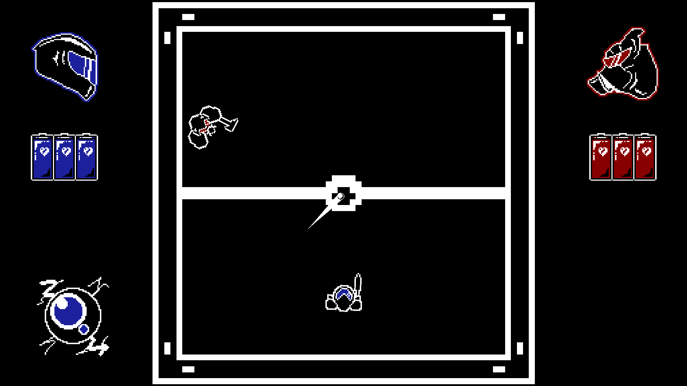 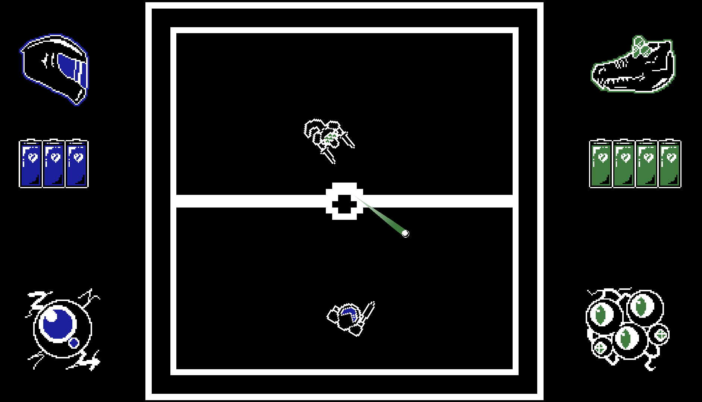
Galactic Controller is a strategy game where you play through multiple levels with three types of ships: fangs, colossus and absorber. Your goal is to reach the end of the levels, in singleplayer, by landing in planets with 3 ships in their respective place, or in versus, against an AI or a Player where the goal is to beat your opponent through a game of rock-paper-scissors.
Contribution: Everything
Itch.Io Page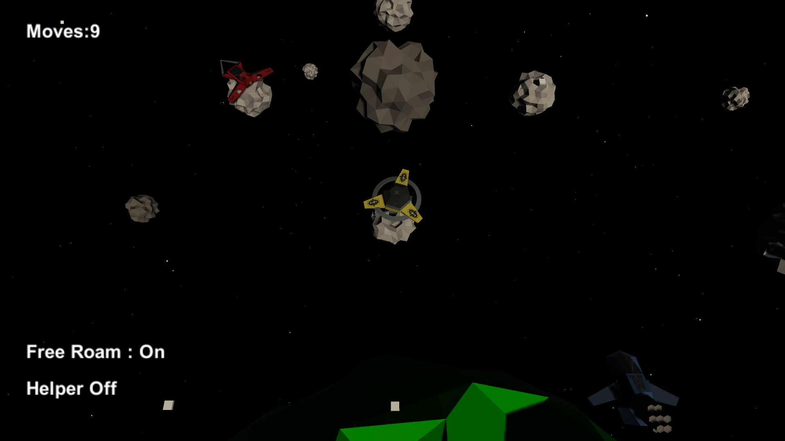 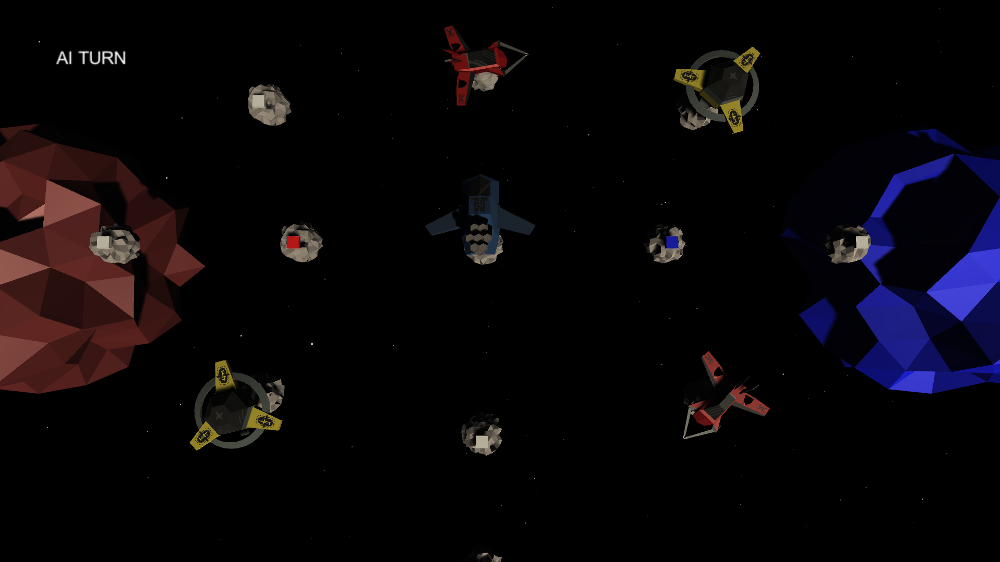
Hot Bullet is a Rogue-Like game that revolves around time. Use various weapons and items to survive as long as possible against hordes of enemies and a life bar that is constantly counting down.
Contribution: Coding and Design
Itch.Io Page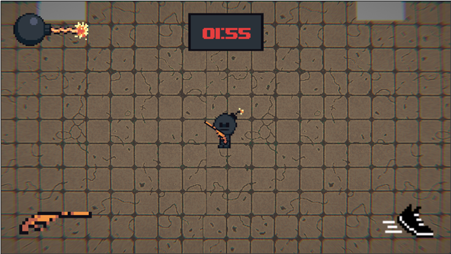 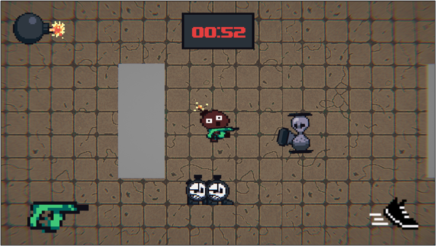
Projects
Software
The project is a collaboration and education platform focused on the musical area. In a way, it serves as a network of users whose interest is to learn about music, meet other people in the field, enrich knowledge about certain musical areas, and even collaborate on projects to achieve a common goal, making music. It is possible to achieve these objectives with easy and quick communication and recognize skills through the assessment and feedback systems that we could see in education systems.
The application allows:
• Creation of user accounts and customization;
• Access and search for users, tutorials and collaborations;
• Creation of tutorials that students can then subscribe to and use;
• Creation of musical collaborations where multiple users can contribute to a musical projects through an
arrangement panel.
Contribution:
• Mostly Backend;
• Frontend & Stylization;
• Azure Cloud Service Setup;
• Google and Spotify API Setup.
This project aimed to create a library, or package, on the Unity video game development platform. The purpose of this package was to help create scenarios, test components and parameterize properties seen in 2D platform video games, aiming to make this system modular, complete and accessible to developers of all levels of video game and Unity knowledge.
The application allows:
• Create and customize configurations of modules for actions;
• Movement, extra actions, interactions with scene, containers and inventories, animations and sound effects;
• Store data through Scriptable Objects;
• Custom editor view for simplicity in usage.
Git Repo
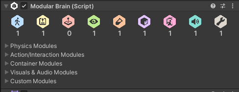 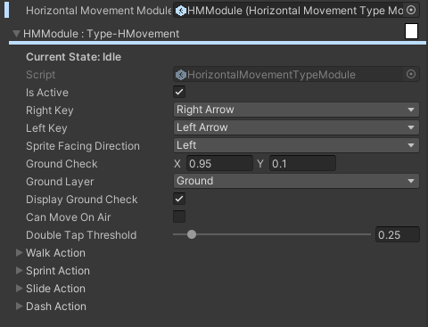 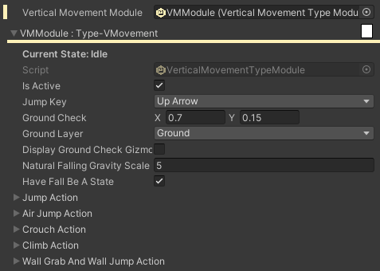 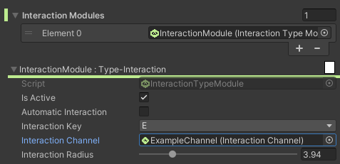 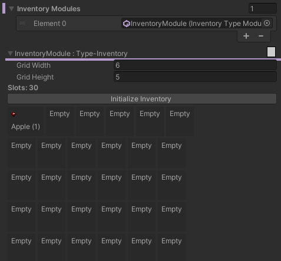 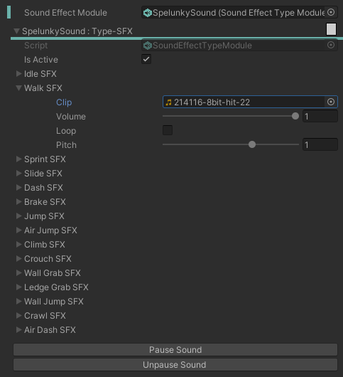 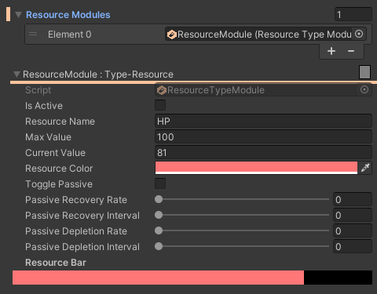 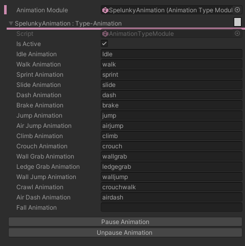